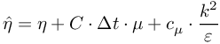
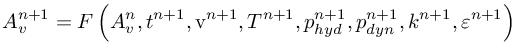

Simulate with complex geometries and complex physics
vp-
directly incompresssible, implicit solver with penalty formulation
We describe the numerical scheme for incompressible / weakly compressible.
A document containing the scheme is found in DOCUMATH_GeneralNumericalScheme.pdf.
The timestep starts with an (explicit!) movement of the MESHFREE points.
The new positions of time level are found in %ind_x(1)% , %ind_x(2)% , %ind_x(3)% .
The old positions of time level are kept in %ind_x0(1)% , %ind_x0(2)% , %ind_x0(3)% .
Compute all necessary material data. Especially see %ind_r%, %ind_ETA%, %ind_LAM%, %ind_MUE%, %ind_betaDarcy%, %ind_v0Darcy(1)% ... %ind_v0Darcy(3)%, %ind_SIG%, ...
![\begin{array}{*{35}{l}}
\rho & =\rho \left( t_{{}}^{n+1},p_{hyd}^{n}+p_{dyn}^{n},T_{{}}^{n},A_{v}^{n} \right) \\
\eta & =\eta \left( t_{{}}^{n+1},p_{hyd}^{n}+p_{dyn}^{n},T_{{}}^{n},A_{v}^{n} \right) \\
\lambda & =\lambda \left( t_{{}}^{n+1},p_{hyd}^{n}+p_{dyn}^{n},T_{{}}^{n},A_{v}^{n} \right) \\
\mu & =\mu \left( t_{{}}^{n+1},p_{hyd}^{n}+p_{dyn}^{n},T_{{}}^{n},A_{v}^{n} \right) \\
k_{D}^{{}} & =k_{D}^{{}}\left( t_{{}}^{n+1},p_{hyd}^{n}+p_{dyn}^{n},T_{{}}^{n},A_{v}^{n} \right) \\
... & {} \\
\end{array}](73873e14214e5f4f586158269c290b68.png) Also, compute derived data, for example:
the compressibility, see %ind_R_P%, also %ind_DiagPcorr% .
Compute the effective viscosity, see %ind_ETA_sm% and VelocityAlgorithm.
Also, compute derived data, for example:
the compressibility, see %ind_R_P%, also %ind_DiagPcorr% .
Compute the effective viscosity, see %ind_ETA_sm% and VelocityAlgorithm.
![\left\{ \begin{matrix}
\frac{\mathbf{\tilde{v}}_{{}}^{n+1}-\mathbf{v}_{{}}^{n}}{\Delta t}+\frac{1}{\rho }\nabla \tilde{p}_{hyd}^{n+1}+\frac{1}{\rho }\nabla \tilde{p}_{dyn}^{n}+\frac{1}{\rho }\nabla c=\frac{1}{\rho }\nabla \mathbf{S}_{v}^{{}}\left( \mathbf{\tilde{v}}_{{}}^{n+1} \right)+\mathbf{\hat{g}}^n-\beta \cdot ( \mathbf{\tilde{v}}_{{}}^{n+1} - \mathbf{v}_{\beta}) \\
-\frac{1}{\rho }\frac{\partial \rho }{\partial p}\frac{1}{\Delta t}c+\nabla _{{}}^{T}\left( \frac{\Delta t_{virt}^{{}}}{\left( 1+\Delta t_{\beta }^{{}}\cdot \beta \right)}\frac{1}{\rho }\nabla c \right)-\nabla _{{}}^{T}\mathbf{\tilde{v}}_{{}}^{n+1}=-\left( \overline{\nabla _{{}}^{T}\mathbf{v}} \right)_{c}^{n+1} \\
\end{matrix} \right\}](37faf45654dd4a9989d311850940f6e3.png) Update the dynamic pressure. See %ind_p_dyn%
Correct the velocity with the help of the correction pressure if VP0_VelocityCorrection is switched on. Result in %ind_v(1)% ... %ind_v(3)% .
Compute the new density as a backup for the next time step. See %ind_r_c% .
Update the dynamic pressure. See %ind_p_dyn%
Correct the velocity with the help of the correction pressure if VP0_VelocityCorrection is switched on. Result in %ind_v(1)% ... %ind_v(3)% .
Compute the new density as a backup for the next time step. See %ind_r_c% .
 Compute the stress tensor at time level by the stress tensor algorithm, i.e.
see the StressTensorAlgorithm .
Update turbulence values for k-epsilon. See %ind_k% and %ind_eps% .
Recompute the resulting body forces. See %ind_g(1)% ... %ind_g(3)% .
Recompute, if needed, the hydrostatic pressure. See LIQUID.%ind_p% .
Nominal divergence of velocity, motivated by dynamic pressure. Temporarily resulting in %ind_div_bar% .
out of the velocity field, compute the consistent dynamic pressure. See %ind_p_dyn% .
Compute the stress tensor at time level by the stress tensor algorithm, i.e.
see the StressTensorAlgorithm .
Update turbulence values for k-epsilon. See %ind_k% and %ind_eps% .
Recompute the resulting body forces. See %ind_g(1)% ... %ind_g(3)% .
Recompute, if needed, the hydrostatic pressure. See LIQUID.%ind_p% .
Nominal divergence of velocity, motivated by dynamic pressure. Temporarily resulting in %ind_div_bar% .
out of the velocity field, compute the consistent dynamic pressure. See %ind_p_dyn% .
![\begin{array}{*{35}{l}}
-\frac{1}{\Delta t_{{}}^{2}}\left( \frac{1}{\rho }\frac{\partial \rho }{\partial p}p_{dyn}^{n+1} \right)+\nabla _{{}}^{T}\left( \frac{1}{\rho }\nabla \left( p_{dyn}^{n+1} \right) \right)= & -\frac{1}{\Delta t}\left( \left( \overline{\nabla _{{}}^{T}\mathbf{v}} \right)_{dyn}^{n+1}-\left( \nabla _{{}}^{T}\mathbf{v} \right)_{{}}^{n} \right) \\
{} & -\frac{1}{\Delta t_{{}}^{2}}\left( \frac{1}{\rho }\frac{\partial \rho }{\partial p}p_{dyn}^{n} \right) \\
{} & + \Psi \left( \mathbf{v}_{{}}^{n+1} \right)-\Theta \left( \mathbf{v}_{{}}^{n+1} \right)-\Phi \left( \mathbf{v}_{{}}^{n+1} \right) \\
\end{array}](a7398587f6530fe9affba4545f3591ad.png) backup the density after computing the dynamic pressure
backup the density after computing the dynamic pressure
 compute the target divergence of velocity as a backup for the next time cycle. Resulting both in %ind_div_bar_0% and %ind_div_bar%.
Compute the rediduals for the velocity. See %ind_v_residual(1)% ... %ind_v_residual(3)% .
Compute the rediduals for the density. See %ind_r_residual%
integrate all additional variables defined by the CODI commands. See also %ind_addvar% ...
compute the target divergence of velocity as a backup for the next time cycle. Resulting both in %ind_div_bar_0% and %ind_div_bar%.
Compute the rediduals for the velocity. See %ind_v_residual(1)% ... %ind_v_residual(3)% .
Compute the rediduals for the density. See %ind_r_residual%
integrate all additional variables defined by the CODI commands. See also %ind_addvar% ...

Compute the effective body forces, see %ind_g(1)% ... %ind_g(3)%
Solve the hydrostatic pressure. See HydrostaticPressureAlgorithm. See also LIQUID.%ind_p% .
Solve the temperature. See TemperatureAlgorithm. See %ind_T% .
Set up the preliminary dynamic pressure for the momentum equation.
The preliminary value is stored in %ind_p_dyn% . The original value of the dynamic pressure at time level is stored in %ind_p_dyn_0% .
Remember, that the parameter is set by the input-file-parameter damping_p_corr .
Compute the nominal divergence of velocity, needed for the desired divergence of velocity in CorrectionPressureAlgorithm, see especially DesiredAndNominalDivergenceOfVelocity. Temporarily saved in %ind_div_bar% .
Solve the velocity and the correction pressure in one big system of equations. See %ind_v(1)% ... %ind_v(3)% as well as %ind_v_tild(1)% ... %ind_v_tild(3)% . See %ind_c% (correction pressure).

| This item is referenced in: | |
|---|---|
| USER_common_variables | Colliding droplets in cone geometry: USER_common_variables.dat |
| USER_common_variables | Local flow resistance due to block of porous material: USER_common_variables.dat |
| USER_common_variables | Local flow resistance due to block of anisotropic porous material: USER_common_variables.dat |
| WaterSand | A jet of water and sand hits a plate |
| USER_common_variables | A jet of water and sand hits a plate: USER_common_variables.dat |
| USER_common_variables | CleaningJet: Letters getting washed away by a water jet : USER_common_variables.dat |
| USER_common_variables | Coating: Letters getting coated with enamel : USER_common_variables.dat |
| USER_common_variables | Melting: Letters melting in two different ways : USER_common_variables.dat |
| USER_common_variables | Rolling: Letters getting flattened by a rolling pin : USER_common_variables.dat |
| USER_common_variables | Spray: Letters getting sprayed with paint : USER_common_variables.dat |
| USER_common_variables | Melting: Letters swelling like bread : USER_common_variables.dat |
| USER_common_variables | Melting: Letters sweling like muffins : USER_common_variables.dat |
| tut3d_01 | TUTORIAL 1: flow in a simple tube |
| USER_common_variables | flow in a Y-piece: USER_common_variables.dat |
| USER_common_variables | TUTORIAL 1: flow in a simple tube: USER_common_variables.dat |
| USER_common_variables | formation of a free jet: USER_common_variables.dat |
| USER_common_variables | TUTORIAL 3: flow in open channel with obstacle: USER_common_variables.dat |
| USER_common_variables | TUTORIAL 4: flow around a cylinder with local refinement: USER_common_variables.dat |
| USER_common_variables | TUTORIAL 4b: flow around a cylinder with local refinement (geometry-based): USER_common_variables.dat |
| USER_common_variables | TUTORIAL 5: flow around a MOVING cylinder with MOVING local refinement: USER_common_variables.dat |
| USER_common_variables | TUTORIAL 6: flow around a periodically moving cylinder: USER_common_variables.dat |
| USER_common_variables | TUTORIAL 7: boiling flow in a bowl: USER_common_variables.dat |
| USER_common_variables | TUTORIAL 8: simple pressing process: USER_common_variables.dat |
| USER_common_variables | TUTORIAL 9: simple floating process: USER_common_variables.dat |
| tut3d_10 | TUTORIAL 10: simple rolling process |
| USER_common_variables | TUTORIAL 10: simple rolling process: USER_common_variables.dat |
| %ind_div_bar_c% | PURE POSTPROCESSING: the (divergence of velocity)^bar at the point in the numerical scheme where the correction pressure is computed |
| %ind_div_bar_pDyn% | PURE POSTPROCESSING: the (divergence of velocity)^bar at the point in the numerical scheme where the correction pressure is computed |
| %ind_k_Un(1)% | Stagevalue inside a higher order Runge-Kutta time integration method like SDIRK2 |
| %ind_k_Un(2)% | Stagevalue inside a higher order Runge-Kutta time integration method like SDIRK2 |
| %ind_k_Un(3)% | Stagevalue inside a higher order Runge-Kutta time integration method like SDIRK2 |
| %ind_k_Un(4)% | Stagevalue inside a higher order Runge-Kutta time integration method like SDIRK2 |
| COEFF_dt_Darcy | define the virtual time step size for applications with Darcy (Brinkman) term (UCV) |
| COEFF_mue | scaling factor for numerical viscosity (UCV) |
| COMP_dt_indep | parameter to switch on independent time stepping for two-phase LIQUID simulations with v-- and vp- (UCV) |
| damping_p_corr | (chamberwise) parameter to reduce the dynamic pressure as initial guess for the next time level (UCV) |
| FLIQUID_ConsistentPressure_Version | version how to compute the consistent pressure (UCV) |
| LINEQN_scaling | choose the way how to scale/normalize the linear systems (UCV) |
| CHAMBER | (required) define the chamber index for the geometry entities |
| LIQUID__BC__ | definition of physical boundary conditions for LIQUID solver |
| IntegrationType | Numerical Scheme used for time integration |
| Beta | Release notes for the MESHFREE beta executables |
| SDIRK2 | SDIRK2 |
| ImplicitEuler | ImplicitEuler |
| VirtualTimeStepSize | virtual time step size to control the correction pressure or the divergence of velocity |
| SHALLOWWATER | Solver for shallow water equations |